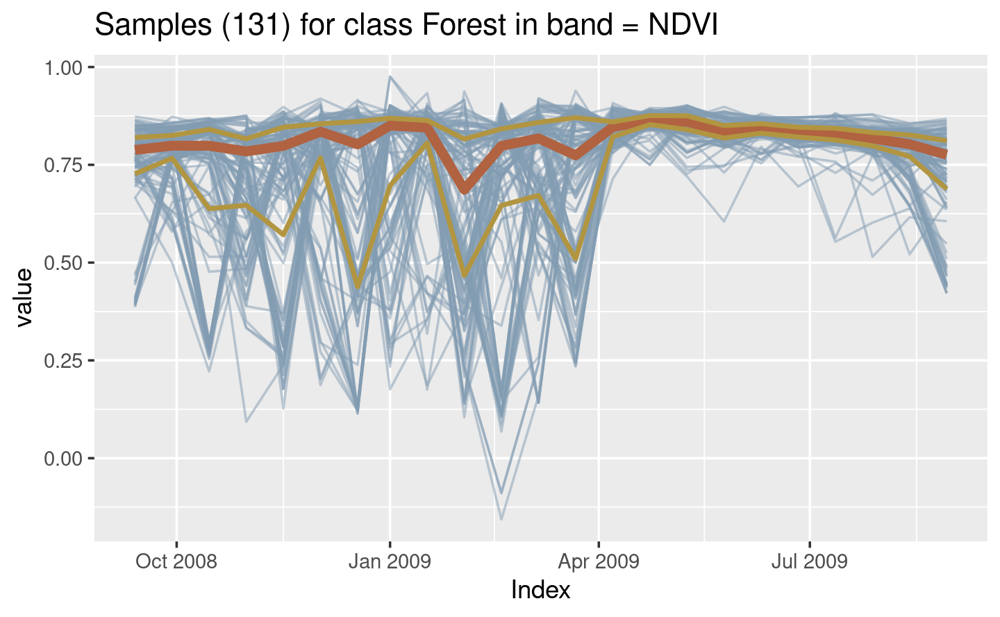
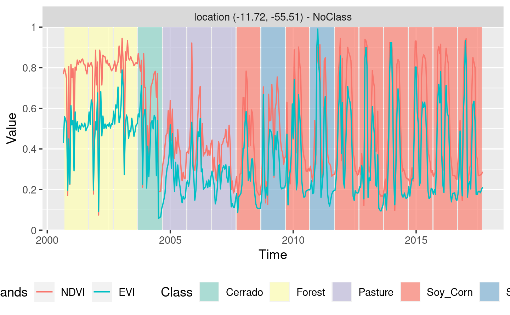

Chapter 4 Time Series Clustering to Improve the Quality of Training Samples
One of the key challenges when using samples to train machine learning classification models is assessing their quality. Noisy and imperfect training samples can have a negative effect on classification performance. Therefore, it is useful to apply pre-processing methods to improve the quality of the samples and to remove those that might have been wrongly labeled or that have low discriminatory power. Representative samples lead to good classification maps. sits provides support for two clustering methods to test sample quality, which is agglomerative hierarchical clustering (AHC) and self-organizing maps (SOM).
4.1 Clustering for sample quality control
Recent results show that it is feasible to apply machine learning methods to SITS analysis in large areas of 100 million ha or more (Picoli et al. 2018; Simoes et al. 2020; Parente et al. 2019; Griffiths et al. 2019). Experience with machine learning methods has established that the limiting factor in obtaining good results is the number and quality of training samples. Large and accurate data sets are better, no matter the algorithm used (Maxwell, Warner, and Fang 2018); increasing the training sample size results in better classification accuracy (Thanh Noi and Kappas 2018). Therefore, using machine learning for SITS analysis requires large and good quality training sets.
One of the key challenges when using samples to train machine learning classification models is assessing their quality. Noisy and imperfect training samples can have a negative effect on classification performance (Frenay and Verleysen 2014). There are two main sources of noise and errors in satellite image time series. Feature noise is caused by clouds and inconsistencies in data calibration. Class noise occurs when the label assigned to the sample is wrongly attributed. Class noise effects are common on large data sets. In particular, interpreters tend to group samples with different properties in the same category. For this reason, one needs good methods for quality control of large training data sets associated with satellite image time series.
Many factors lead to class noise. One of the main problems is the inherent variability of class signatures in space and time. When training data is collected over a large geographic region, natural variability of vegetation phenology can result in different patterns being assigned to the same label. Phenological patterns can vary spatially across a region and are strongly correlated with climate variations. A related issue is the limitation of crisp boundaries to describe the natural world. Class definition use idealized descriptions (e.g., “a savanna woodland has tree cover of 50% to 90% ranging from 8 to 15 meters in height”). However, in practice, the boundaries between classes are fuzzy and sometimes overlap, making it hard to distinguish between them. Class noise can also result from labeling errors. Even trained analysts can make errors in class attributions. Despite the fact that machine learning techniques are robust to errors and inconsistencies in the training data, quality control of training data can make a significant difference in the resulting maps.
Therefore, it is useful to apply pre-processing methods to improve the quality of the samples and to remove those that might have been wrongly labeled or that have low discriminatory power. Representative samples lead to good classification maps. The package provides support for two clustering methods to test sample quality: (a) Agglomerative Hierarchical Clustering (AHC); (b) Self-organizing Maps (SOM).
4.2 Hierachical clustering for Sample Quality Control
4.2.1 Creating a dendogram
Cluster analysis is used in sits as a way to improve training data to feed machine learning classification models by identifying anomalous samples (Frenay and Verleysen 2014). The package uses agglomerative hierarchical clustering (AHC) to compute the dissimilarity between any two elements from a data set. Depending on the distance functions and linkage criteria, the algorithm decides which two clusters are merged at each iteration. AHC approach is suitable for the purposes of samples data exploration due to its visualization power and ease of use (Keogh, Lin, and Truppel 2003). Moreover, AHC does not require a predefined number of clusters as an initial parameter. This is an important feature in satellite image time series clustering since defining the number of clusters present in a set of multi-attribute time series is not straightforward (Aghabozorgi, Shirkhorshidi, and Wah 2015).
The main result of the AHC method is a dendrogram. It is the ultrametric relation formed by the successive merges in the hierarchical process that can be represented by a tree. Dendrograms are quite useful to decide the number of clusters to partition the data. It shows the height where each merging happens, which corresponds to the minimum distance between two clusters defined by a linkage criterion. The most common linkage criteria are: single-linkage, complete-linkage, average-linkage, and Ward-linkage. Complete-linkage prioritizes the within-cluster dissimilarities, producing clusters with shorter distance samples. Complete-linkage clustering can be sensitive to outliers, which can increase the resulting intracluster data variance. As an alternative, Ward proposes criteria to minimize the data variance by means of either sum-of-squares or sum-of-squares-error (Ward 1963). Ward’s intuition is that clusters of multivariate observations, such as time series, should be approximately elliptical in shape (Hennig 2015). In sits, a dendrogram can be generated by sits_dendrogram(). The following codes illustrate how to create, visualize, and cut a dendrogram (for details, see ?sits_dendrogram()).
4.2.2 Using a dendrogram to evaluate sample quality
After creating a dendrogram, an important question emerges: where to cut the dendrogram? The answer depends on what are the purposes of the cluster analysis. We need to balance two objectives: get clusters as large as possible, and get clusters as homogeneous as possible with respect to their known classes. To help this process, sits provides sits_dendro_bestcut() function that computes an external validity index Adjusted Rand Index (ARI) for a series of the different number of generated clusters. This function returns the height where the cut of the dendrogram maximizes the index.
In this example, the height optimizes the ARI and generates \(6\) clusters. The ARI considers any pair of distinct samples and computes the following counts: (a) the number of distinct pairs whose samples have the same label and are in the same cluster; (b) the number of distinct pairs whose samples have the same label and are in different clusters; (c) the number of distinct pairs whose samples have different labels and are in the same cluster; and (d) the number of distinct pairs whose samples have the different labels and are in different clusters. Here, \(a\) and \(d\) consist in all agreements, and \(b\) and \(c\) all disagreements. The ARI is obtained by:
\[ ARI=\frac{a+d-E}{a+d+b+c-E}, \] where \(E\) is the expected agreement, a random chance correction calculated by \[ E=(a+b)(b+c)+(c+d)(b+d). \]
Unlike other validity indexes such as Jaccard (\({J=a/(a+b+c)}\)), Fowlkes-Mallows (\({FM=a/(a^2+a(b+c)+bc)^{1/2}}\)), and Rand (the same as ARI without the \(E\) adjustment) indices, ARI is more appropriate either when the number of clusters is outweighed by the number of labels (and vice versa) or when the number of samples in labels and clusters are imbalanced (Hubert and Arabie 1985), which is usually the case.
# take a set of patterns for 2 classes
# create a dendrogram, plot, and get the optimal cluster based on ARI index
clusters <- sits::sits_cluster_dendro(cerrado_2classes,
bands = c("ndvi", "evi"))
# show clusters samples frequency
sits::sits_cluster_frequency(clusters)#>
#> 1 2 3 4 5 6 Total
#> Cerrado 203 13 23 80 1 80 400
#> Pasture 2 176 28 0 140 0 346
#> Total 205 189 51 80 141 80 746
Note in this example that almost all clusters have a predominance of either “Cerrado” or “Pasture” classes with the exception of cluster \(3\). The contingency table plotted by sits_cluster_frequency() shows how the samples are distributed across the clusters and help to identify two kinds of confusion. The first is relative to those small amounts of samples in clusters dominated by another class (e.g. clusters \(1\), \(2\), \(4\), \(5\), and \(6\)), while the second is relative to those samples in non-dominated clusters (e.g. cluster \(3\)). These confusions can be an indication of samples with poor quality, and inadequacy of selected parameters for cluster analysis, or even a natural confusion due to the inherent variability of the land classes.
The result of the sits_cluster operation is a sits_tibble with one additional column, called “cluster”. Thus, it is possible to remove clusters with mixed classes using standard R such as those in the dplyr package. In the example above, removing cluster \(3\) can be done using the dplyr::filter function.
# remove cluster 3 from the samples
clusters_new <- dplyr::filter(clusters, cluster != 3)
# show new clusters samples frequency
sits::sits_cluster_frequency(clusters_new)#>
#> 1 2 4 5 6 Total
#> Cerrado 203 13 80 1 80 377
#> Pasture 2 176 0 140 0 318
#> Total 205 189 80 141 80 695The resulting clusters still contained mixed labels, possibly resulting from outliers. In this case, users may want to remove the outliers and leave only the most frequent class. To do this, one can use sits_cluster_clean(), which removes all minority samples, as shown below.
# clear clusters, leaving only the majority class in each cluster
clean <- sits::sits_cluster_clean(clusters)
# show clusters samples frequency
sits_cluster_frequency(clean)#>
#> 1 2 3 4 5 6 Total
#> Cerrado 203 0 0 80 0 80 363
#> Pasture 0 176 28 0 140 0 344
#> Total 203 176 28 80 140 80 7074.3 Using Self-organizing Maps for Sample Quality
4.3.1 Introduction to Self-organizing Maps
As an alternative for hierarchical clustering for quality control of training samples, SITS provides a clustering technique based on self-organizing maps (SOM). SOM is a dimensionality reduction technique (Kohonen 1990), where high-dimensional data is mapped into two dimensions, keeping the topological relations between data patterns. The input data is a set of training samples that are typical of a high dimension. For example, a time series of 25 instances of 4 spectral bands is a 100-dimensional data set. The general idea of SOM-based clustering is that, by projecting the high-dimensional data set of training samples into a 2D map, the units of the map (called “neurons”) compete for each sample. It is expected that good quality samples of each class should be close together in the resulting map. The neighbors of each neuron of a SOM map provide information on intra-class and inter-class variability.
The main steps of our proposed method for quality assessment of satellite image time series are shown in the figure below. The method uses self-organizing maps (SOM) to perform dimensionality reduction while preserving the topology of original datasets. Since SOM preserves the topological structure of neighborhoods in multiple dimensions, the resulting 2D map can be used as a set of clusters. Training samples that belong to the same class will usually be neighbors in 2D space. The neighbors of each neuron of a SOM map are also expected to be similar.

Figure 4.1: Using SOM for class noise reduction
As the figure shows, a SOM grid is composed of units called . The algorithm computes the distances of each member of the training set to all neurons and finds the neuron closest to the input, called the best matching unit (BMU). The weights of the BMU and its neighbors are updated so as to preserve their similarity (Kohonen 2013). This mapping and adjustment procedure is done in several iterations. At each step, the extent of the change in the neurons diminishes until a convergence threshold is reached. The result is a 2D mapping of the training set, where similar elements of the input are mapped to the same neuron or to nearby ones. The resulting SOM grid combines dimensionality reduction with topological preservation.
4.3.2 Using SOM for removing class noise
The process of clustering with SOM is done by sits_som_map(), which creates a self-organizing map and assesses the quality of the samples. This function uses the “kohonen” R package (???) to compute a SOM grid. Each sample is assigned to a neuron, and neurons are placed in the grid based on similarity. The second step is the quality assessment. Each neuron will be associated with a discrete probability distribution. Homogeneous neurons (those with a single class) are assumed to be composed of good quality samples. Heterogeneous neurons (those with two or more classes with significant probability) are likely to contain noisy samples.
Considering that each sample of the training set is assigned to a neuron, the algorithm computes two values for each sample:
- prior probability: the probability that the label assigned to the sample is correct, considering only the samples in the same neuron. For example, if a neuron has 20 samples, of which 15 are labeled as “Pasture” and 5 as “Forest”, all samples labeled “Forest” are assigned a prior probability of 25%. This is an indication that the “Forest” samples in this neuron are not of good quality.
- posterior probability: the probability that the label assigned to the sample is correct, considering the neighboring neurons. Take the case of the above-mentioned neuron whose samples labeled “Pasture” have a prior probability of 75%. What happens if all the neighboring samples have “Forest” as a majority label? Are the samples labeled “Pasture” in this neuron noisy? To answer this question, we use information from the neighbours. Bayesian inference we estimate if these samples are noisy based on the samples of the neighboring neurons [Santos2021].
As an example of the use of SOM clustering for quality control of samples, we take a dataset containing a tibble with time series samples for the Cerrado region of Brazil, the second largest biome in South America with an area of more than 2 million km2. The training samples were collected by ground surveys and high-resolution image interpretation by experts from the Brazilian National Institute for Space Research (INPE) team and partners. This set ranges from 2000 to 2017 and includes 61,073 land use and cover samples divided into 14 classes: Natural Non-vegetated, Fallow-Cotton, Millet-Cotton, Soy-Corn, Soy-Cotton, Soy-Fallow, Pasture, Shrublands (in Portuguese “Cerrado Rupestre”), Savanna (“Cerrado”), Dense Tree Savanna (“Cerradão”), Open Savanna (“Campo Cerrado”), Planted Forest, and (14) Wetlands. In the example below, we take only 10% of the samples for faster processing. Users are encouraged to run the example with the full set of samples.
# take only 10% of the samples
samples_cerrado_mod13q1_reduced <- sits_sample(samples_cerrado_mod13q1, frac = 0.1)
# clustering time series using SOM
som_cluster <-
sits_som_map(
samples_cerrado_mod13q1_reduced,
grid_xdim = 15,
grid_ydim = 15,
alpha = 1.0,
distance = "euclidean",
rlen = 100
)The output of the sits_som_map is a list with 4 tibbles:
- the original set of time series with two additional columns for each time series:
id_sample(the original id of each sample) andid_neuron(the id of the neuron to which it belongs). - a tibble with information on the neuron. For each neuron, it gives the prior and posterior probabilities of all labels which occur in the samples assigned to it.
- the SOM grid
To plot the SOM grid, use
plot(). The neurons are labelled using the majority voting.

Looking at the SOM grid, one can see that most of the neurons of a class are located close to each other. There are outliers, e.g., some “Open Savanna” neurons are located amidst “Shrublands” neurons. This mixture is a consequence of the continuous nature of natural vegetation cover in the Brazilian Cerrado. The transition between areas of open savanna and shrublands is not always well defined; moreover, it is dependent on factors such as climate and latitude.
To identifies noisy samples, we take the result of the sits_som_map function as the first argument to the function sits_som_clean_samples. This function finds out which samples are noisy, those that are clean, and some that need to be further examined by the user. It uses the prior_threshold and posterior_threshold parameters according to the following rules:
- If the prior probability of a sample is less than
prior_threshold, the sample is assumed to be noisy and tagged as “remove”; - If the prior probability is greater or equal to
prior_thresholdand the posterior probability is greater or equal toposterior_threshold, the sample is assumed not to be noisy and thus is tagged as “clean”; - If the prior probability is greater or equal to
prior_thresholdand the posterior probability is less thanposterior_threshold, we have a situation the sample is part of the majority level of those assigned to its neuron, but its label is not consistent with most of its neighbors. This is an anomalous condition and is tagged as “analyze”. Users are encouraged to inspect such samples to find out whether they are in fact noisy or not.
The default value for both prior_threshold and posterior_threshold is 60%. The sits_som_clean_samples has an additional parameter (keep) which indicates which samples should be kept in the set based on their prior and posterior probabilities of being noisy and the assigned label. The default value for keep is c("clean", "analyze"). As a result of the cleaning, about 900 samples have been considered to be noisy and thus removed.
new_samples <- sits_som_clean_samples(som_cluster,
prior_threshold = 0.6,
posterior_threshold = 0.6,
keep = c("clean", "analyze"))
# find out how many samples are evaluated as "clean" or "analyze"
new_samples %>%
dplyr::group_by(eval) %>%
dplyr::summarise(count = dplyr::n(), .groups = "drop")#> # A tibble: 2 x 2
#> eval count
#> <chr> <int>
#> 1 analyze 652
#> 2 clean 44164.3.3 Comparing Global Accuracy of Original and Clean Samples
To compare the accuracy of the original and clean samples, we run
a 5-fold validation on the original and on the cleaned sample. We use the function
sits_kfold_validate. As the results show, the SOM procedure is useful, since
the global accuracy improves from 91% to 95%.
An additional way of evaluating the quality of samples is to examine the internal
mixture inside neurons with the same label. We call a group of neurons sharing
the same label as a “cluster”. Given a SOM map, the function sits_som_evaluate_cluster
examines all clusters to find out the percentage of samples contained in it which do not share its label. This information is saved as a tibble and can also
be visualized.
# evaluate the misture in the SOM clusters
cluster_mixture <- sits_som_evaluate_cluster(som_cluster)
# plot the mixture information.
plot(cluster_mixture)
4.4 Conclusion
Machine learning methods are now established as a useful technique for remote sensing image analysis. Despite the well-known fact that the quality of the training data is a key factor in the accuracy of the resulting maps, the literature on methods for detecting and removing class noise in SITS training sets is limited. To contribute to solving this challenge, this paper proposed a new technique. The proposed method uses the SOM neural network to group similar samples in a 2D map for dimensionality reduction. The method identifies both mislabeled samples and outliers that are flagged to further investigation. The results demonstrate the positive impact on the overall classification accuracy. Although the class noise removal adds an extra cost to the entire classification process, we believe that it is essential to improve the accuracy of classified maps using SITS analysis mainly for large areas.